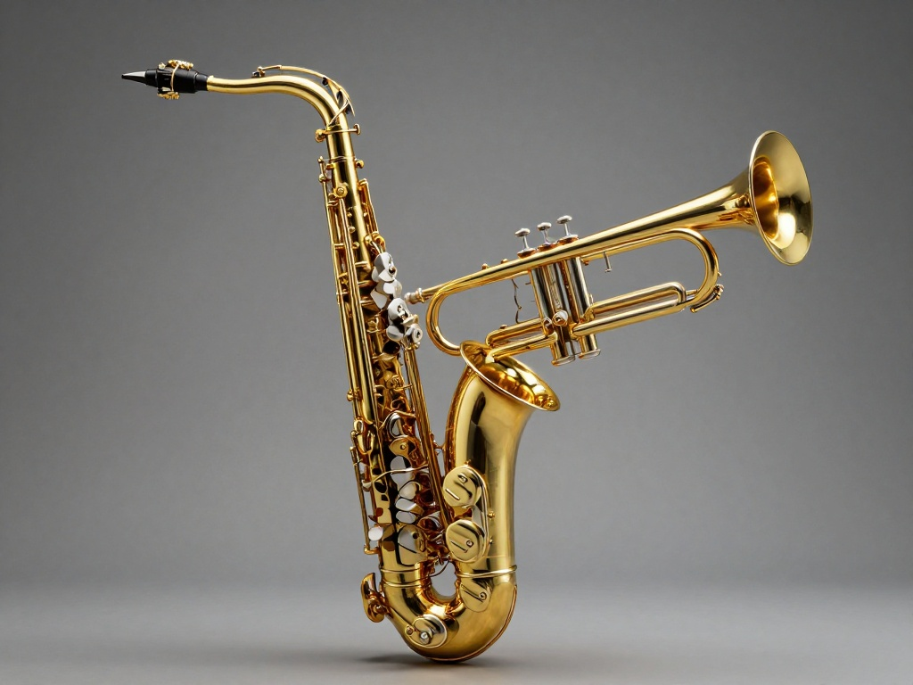
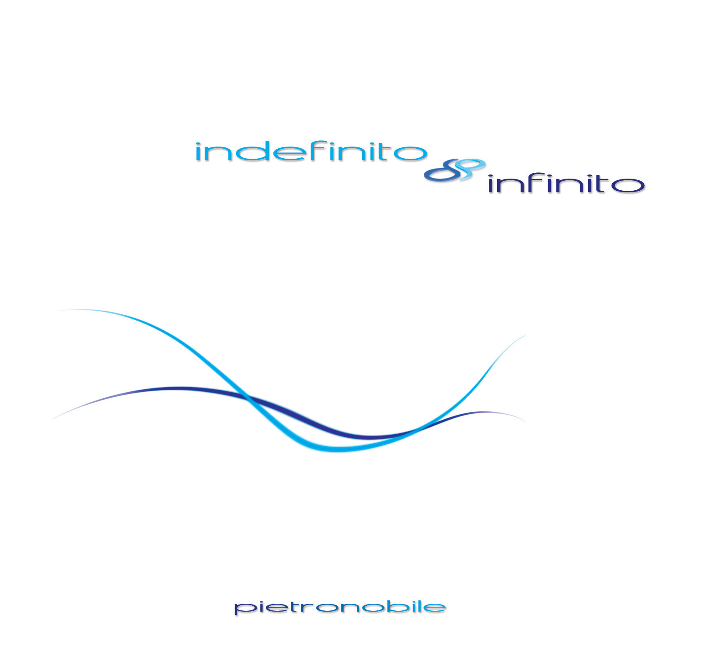
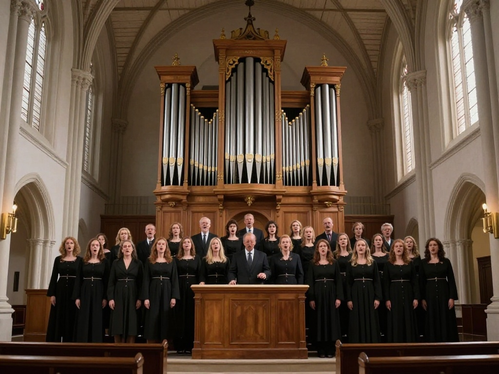
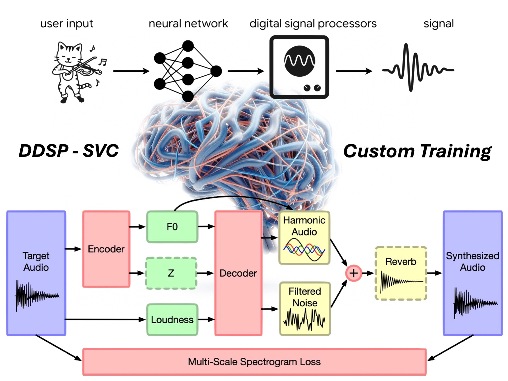
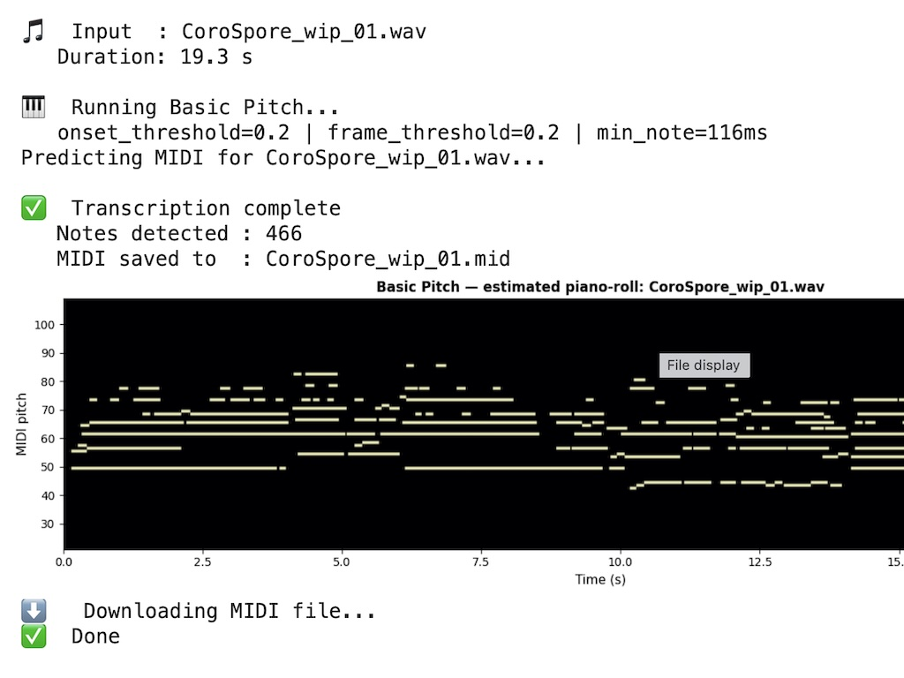

Project Overview
The name Morphoné blends the Greek words Morphé (μορφή - Form) and Phoné (φωνή - Sound). Our mission is to create seamless, studio-quality artistic morphing between a source recording and a destination instrument.
We harness cutting-edge technologies — such as Timbre Transfer, Sound-to-MIDI conversion, and Source Separation — to transform original audio recordings and unlock entirely new expressive possibilities for musicians and sound designers.

To guide you through our research, we have organized our sub-projects into three core categories, each mapping directly to an interactive experience in our Listening Portal:
- Monotimbral Monophonic: Timbral transformation applied to single melodic lines (Sax to Trumpet).
- Monotimbral Polyphonic: Morphing applied to complex polyphonic harmonies and chords (Guitar to Piano).
- Polytimbral Polyphonic: Complex timbral transitions between heterogeneous ensembles (Choir to Organ).

While appearing disarmingly simple, each track in our archives is the result of careful coding and meticulous acoustic editing, crafted in close collaboration with the original artists.
Morphoné is an open ecosystem: we warmly welcome sound engineers, developers, and artists to join us in expanding the horizons of acoustic creativity.

All archival tracks are available for streaming. For studio-quality WAV versions or custom licensing inquiries, please reach out to us via the Contacts page, in accordance with the intellectual property and copyright terms of the respective artists.
Select a Project
Monotimbral Monophonic
Recording & Artist Spotlight
This project is built upon an original performance of Carla Bley’s masterpiece, "Lawns", recorded by the Rino Cirinnà Jazz Quartet.
- Luca Biggio — Saxophone
- Rino Cirinnà — Saxophone
- Angelo Cultreri — Organ
- Andrea Liotta — Drums
Monotimbral Polyphonic
Project Concept & Artistic Vision
This project highlights "Manimé", a composition by acclaimed acoustic guitarist Pietro Nobile from his LP Indefinito Infinito. Interestingly, Nobile composed "Manimé" to explore "the piano language on the guitar," making this timbral morphing experiment a natural and welcome extension of his original creative intent.
Aesthetic Fidelity:
For this experiment, a 2'48" excerpt of the full 4'55" piece was isolated. The ambient reverb, a core technical and emotional signature of Nobile's sound, was custom-applied and mixed by the artist himself in his private studio across all presented versions. Crucially, this Timbre Transfer does not seek to simulate a standard piano cover; instead, it aims to preserve the expressive articulation of the guitar. For this reason, conventional piano enhancements (such as the sustain pedal) were intentionally avoided to prevent any unnatural artificiality.
- Pietro Nobile — Composer, Acoustic Guitar, Mixing & Reverb
- Acoustic Source — From the LP Indefinito Infinito
- MIDI Target Library — PSound Gran Coda
Polytimbral Polyphonic
Project Concept & Artistic Vision
This project is built upon an original performance of the classical Adolphe Adam's Christmas carol "O Holy Night", recorded by choir director Marco Lucà.
- Corale Anna Maria Scala of Cen.Tr.O 21, Coro Note di Volta, Coro Spore.
Real-Time Settings: Relative Volume & Stereo Placement
-90° Left - 0° Center - 90° Right
Our Version of Morphoné
Real-Time Settings: Relative Volume & Stereo Balance
-90° Left - 0° Center - 90° Right
Our Version of Morphoné
Real-Time Settings: Relative Volume & Stereo Balance
-90° Left - 0° Center - 90° Right
Our Version of Morphoné
Contacts
Corrado Amedeo Bertazzoni
Salvatore Benvenuto Zocco
Differentiable DSP & Monophonic Timbre Transfer
For monophonic morphing (such as our Sax to Brass pipeline), we leverage Google Magenta’s pioneering research in Differentiable Digital Signal Processing (DDSP). Unlike traditional end-to-end neural audio synthesis, DDSP integrates classical DSP elements (such as additive synthesizers and filtered noise generators) as differentiable layers within deep learning architectures.
Our implementation utilizes the advanced DDSP-SVC Repository, a real-time singing voice and instrument conversion framework. By decoupling pitch (F0) tracking and loudness extraction from the spectral identity (timbre), the system reconstructs the expressive acoustic nuances of the original saxophone performance through the physical model parameters of the target trumpet instrument.

Polyphonic Audio-to-MIDI Transcription
To achieve timbral translation for complex polyphonic performances, such as Pietro Nobile's "Manimé", we employ a hybrid symbolic approach. Rather than raw spectral mapping, the acoustic guitar signal is transcribed into high-fidelity polyphonic MIDI data onsets.
We base our transcription pipeline on Spotify’s machine learning model, utilizing our custom interactive version of the lightweight and precise Basic Pitch Google Colab Notebook. This neural network processes the audio through a multi-pitch estimation network, yielding structural note onsets and precise dynamic velocities. This symbolic stream is subsequently edited and mapped onto multisampled acoustic model target engines.

Open Source Research Ecosystem
Our project operates as an open-ended research ecosystem designed for artists, sound engineers and designers, software developers, and scholars, exploring the boundaries of AI-assisted acoustics and creative audio engineering.
All datasets, optimization scripts, transcription files, and synthesis parameters are fully documented and accessible. You can explore our complete codebase, experiment with our pipeline, and contribute to the research on our official Morphone GitHub Project Repository.